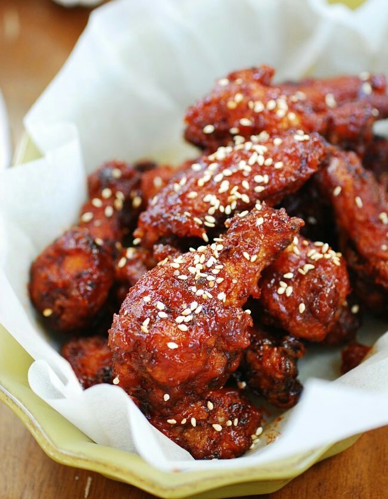

Bahan :
- 1/2 potong dada ayam, potong kecil
- 2 bks tepung serba guna
- 4 siung bawang putih, haluskan
- 1 bks saus tiram
- Saus tomat, secukupnya
- Saus sambal, secukupnya
- Merica, secukupnya
- Kaldu bubuk Alsultan Non MSG Ayam, secukupnya
- Air, secukupnya
- Minyak untuk menggoreng
Cara Membuat :
Langkah 1 : Baluri Ayam Dengan Tepung
Masukkan 1 bungkus tepung serbaguna ke dalam wadah, beri sedikit air, merica dan kaldu bubuk Alsultan, aduk rata sisihkan (adonan basah). Kemudian 1 bungkus tepung serbaguna masukkan dalam wadah, tambahkan merica dan kaldu bubuk Alsultan, aduk rata dan biarkan kering (adonan kering).
Cuci bersih daging ayam, potong kecil sesuai selera. Kemudian masukkan ke dalam adonan basah dan kering secara bergantian, lakukan sampai daging habis. Sisihkan.
Langkah 2 : Goreng Daging Ayam
Panaskan minyak lumayan banyak, masukkan daging ayam yang di balur tepung, goreng hingga matang kecokelatan dengan api sedang. Angkat dan sisihkan
Langkah 3 : Saus ala Korea
Geprek bawang putih dan tumis hingga harum, masukkan saus tiram, aduk sebentar. Kemudian masukkan saus sambal dan saus tomat secukupnya. Aduk terus saus dengan api kecil jangan sampai kosong di wajan ya Moms.
Tambahkan air secukupnya, aduk rata dan masukkan daging ayam yang sudah di goreng. Aduk rata hingga ayam dan saus menyatu. Angkat dan sisihkan.
Taburi sedikit wijen agar lebih cantik. Siapkan nasi hangat dan selada agar ayam pedas semakin mantap ketika Anda memakannya. Oh iya jika Anda ingin pedas sekali bisa juga menambahkan saus sambal yang banyak. Selamat mencoba :))